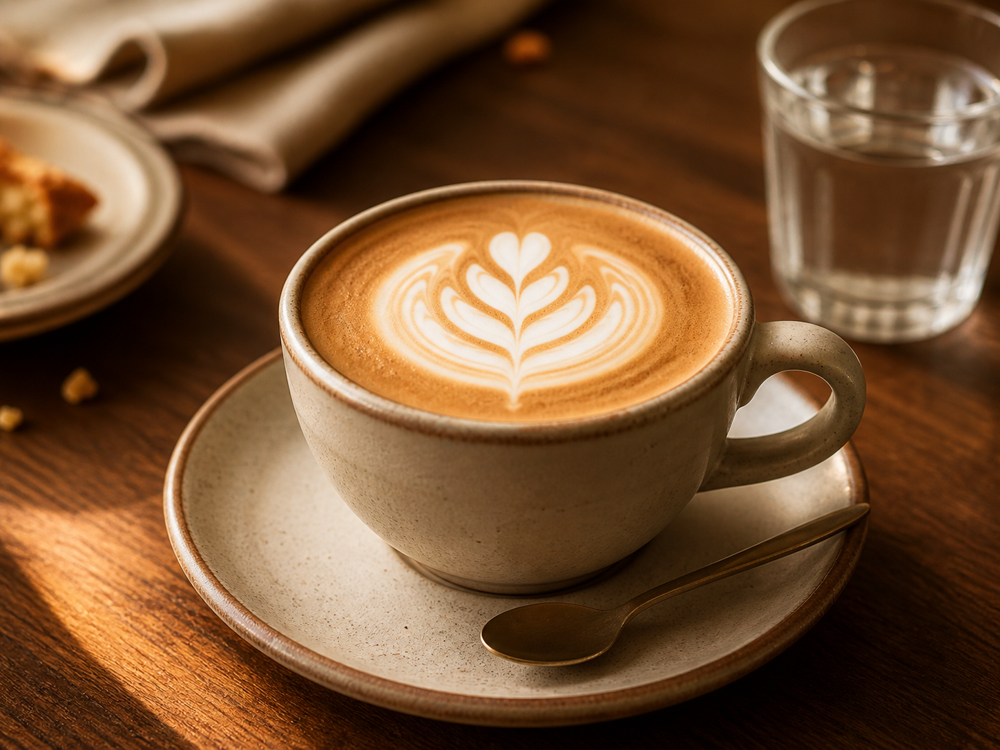
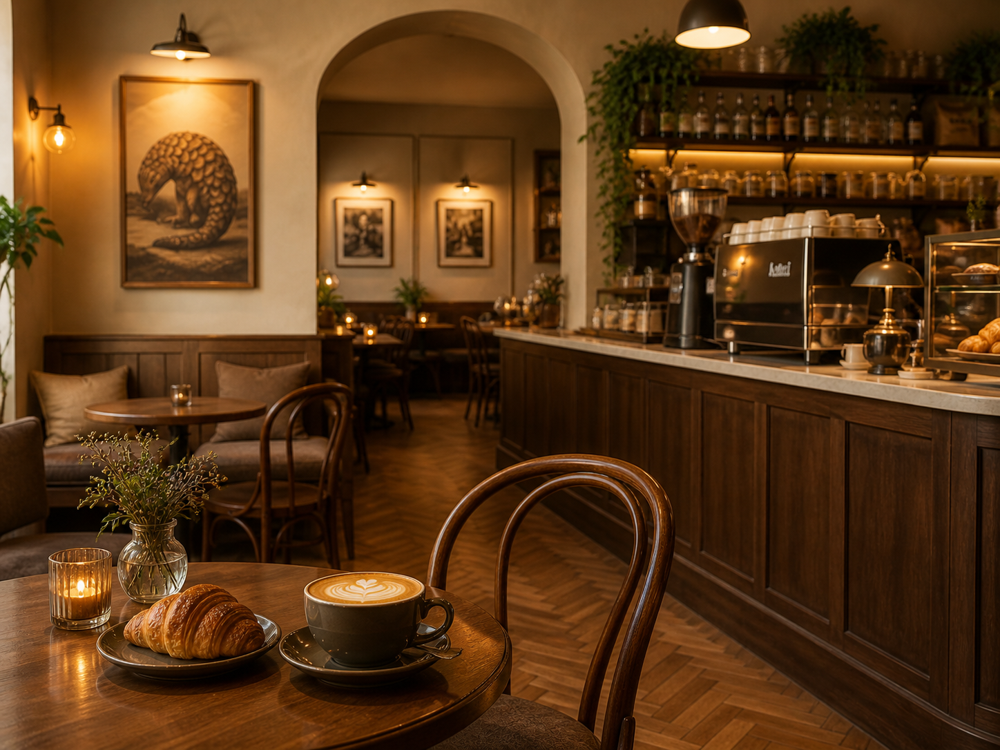
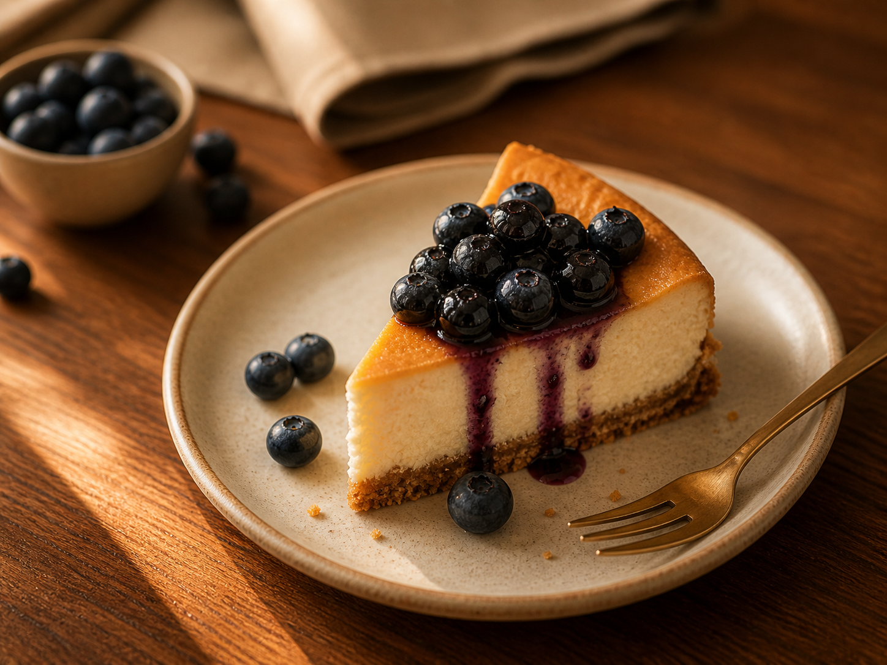
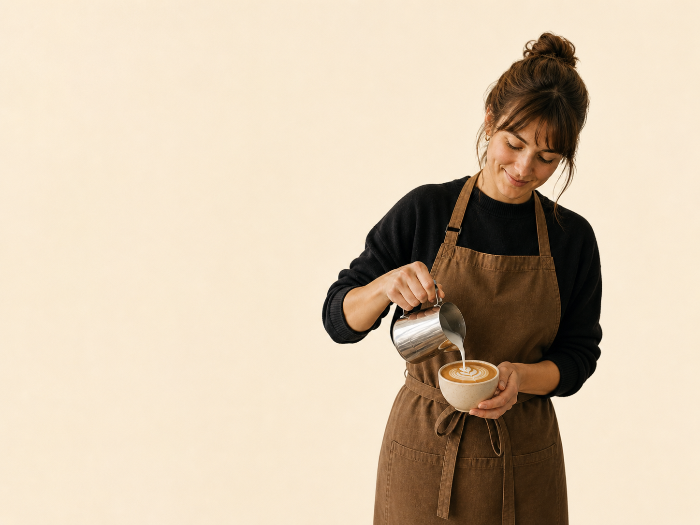
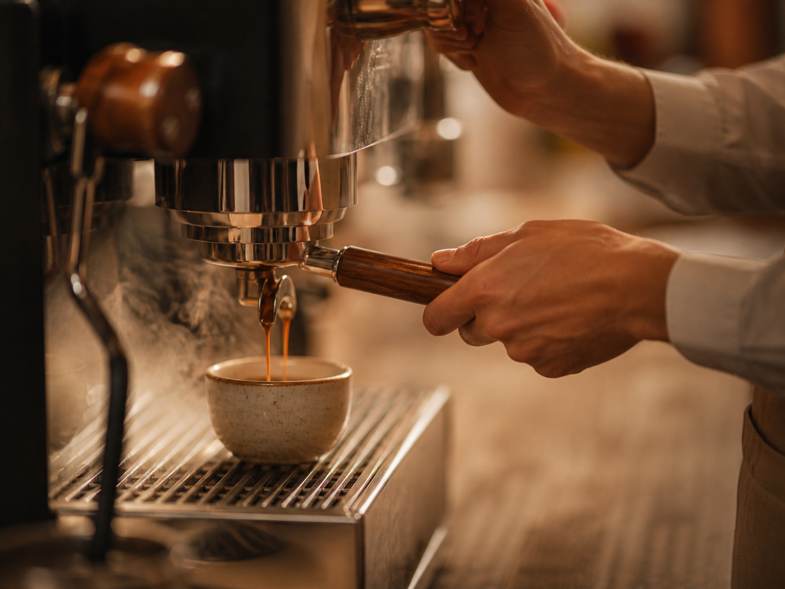

Nápoje
Kávy & nápoje
Espresso, cappuccino, flat white, batch brew, filtrovaná káva, matcha, čaje i sezónní limonády. Aktuálně pracujeme s blendem od pražírny Doubleshot Praha.
od 55 Kč
Zobrazit celou nabídku →Kavárna · Praha 2 · Od roku 2019
Výběrová zrna, poctivá příprava a atmosféra, ve které se snadno zapomenete na chvíli zastavit. Každý šálek děláme tak, aby vám zpříjemnil den.
Prohlédnout menu
Nabídka
Od ranního espressa po víkendový dezert. Všechno připravujeme čerstvě, z kvalitních surovin a s důrazem na chuť.

Nápoje
Espresso, cappuccino, flat white, batch brew, filtrovaná káva, matcha, čaje i sezónní limonády. Aktuálně pracujeme s blendem od pražírny Doubleshot Praha.
od 55 Kč
Zobrazit celou nabídku →
Jídlo & dezerty
Snídaňové talíře, avocado toast, sendviče na kvásku, domácí cheesecake, máslové croissanty a sezónní moučníky. Snídaně servírujeme po celý den.
od 65 Kč
Zobrazit celou nabídku →O nás
Kavárnu U Pangolína jsme otevřeli v roce 2019 s jednoduchou myšlenkou: vytvořit místo, kde se lidé cítí vítaní. Na kávu, na snídani, na práci i na chvíli klidu mezi schůzkami.
Poznat náš příběh
Akce
Degustace, workshopy a malé večery pro všechny, kteří mají rádi kávu víc než jen „s mlékem a cukrem“.
Blog
Tipy, recepty a příběhy od lidí, kteří kávu nejen připravují, ale opravdu ji mají rádi.

Recepty
Tlak, teplota, mletí a trocha trpělivosti. Čtyři věci, které rozhodují o výsledku v šálku.

Origins
Jasná ovocnost, květinové tóny a terroir Yirgacheffe, díky kterému patří etiopské kávy mezi světovou špičku.

Tipy
Hrubost mletí dokáže změnit chuť víc, než se zdá. Ukážeme vám, kde začít a čeho se vyvarovat.